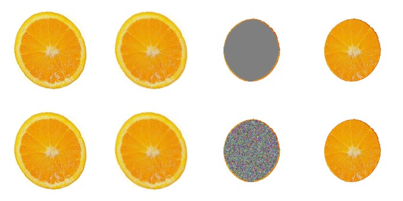
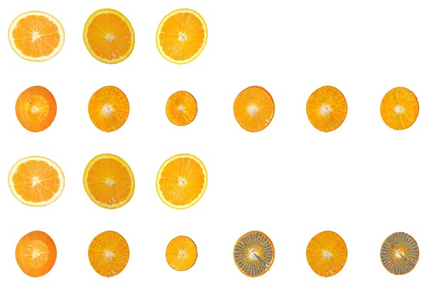
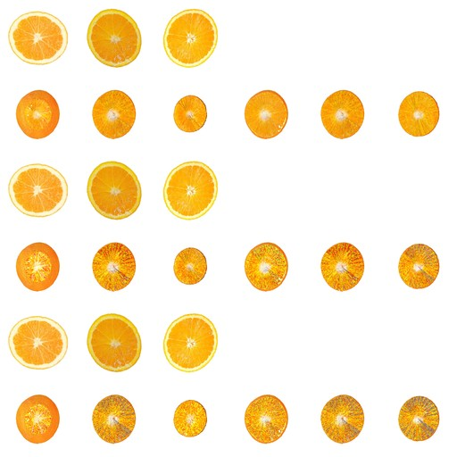
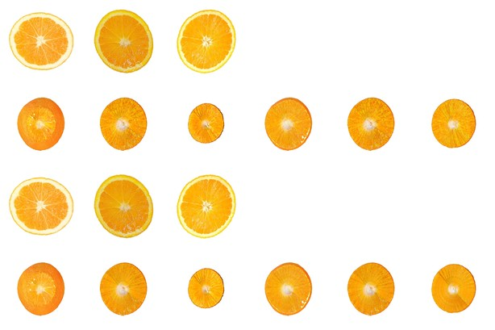
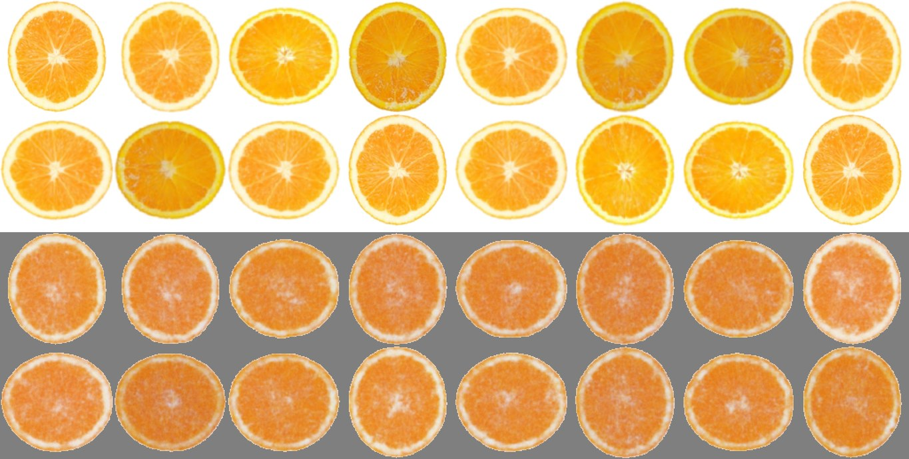
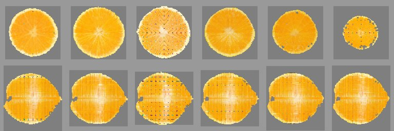
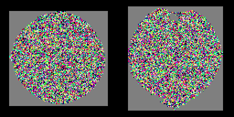

Every experiment, and what each one was asking
The measurements behind the method — including the ones that failed, which are most of them
Every experiment, and what each one was asking
In the order they were run. Each entry says what the question was, what was changed, and what came back — including the ones that failed, which are most of them. Numbers within a group are comparable; numbers across groups are not always, because the held-out split changed partway through and is marked where it does.
Group A — how the supervision is assigned
| experiment | the question | what happened |
|---|---|---|
| the depth blend | the transverse family picked its photograph by integer division, so the photograph changed abruptly at a few depths. Does giving it the continuous assignment the longitudinal family already had remove the banding? | kept. The jump at the switch depths falls from 5.14 to 3.78 in units of the profile's own median jump, and the held-out probe from 0.03081 to 0.02958. A control that re-frames without interpolating measures 5.20, so the improvement is the interpolation and not the re-framing |
| the joint step | a step saw one plane, so a shared cell was pulled to one photograph and then the other. Does putting one of each family in every step help? | kept. 4.5% on the longitudinal column |
| reference follows the jitter | a plane jittered most of the way to its neighbour is still supervised by its own photograph. Should the target follow? | no. 0.0867/0.2255 against 0.0859/0.2257, inside the noise, and it costs half again per step |
| drawing from the whole family instead | drawing is two changes at once — not a mean, and random. Separate them: keep the randomness, throw the depth assignment away | no, and it isolates the mechanism. Worse than both the average and the neighbour draw, in every column of all three objects it can differ on, and worst on the watermelon, which has the most photographs and so the largest difference — its longitudinal column degrades 50%. Not averaging is the half that works |
| drawing a photograph instead of averaging two | the blend removes structure by construction — an average of two oranges' sections is a picture neither is. Draw one of the two at the mixing weight instead, so the expectation is unchanged but each target is real? | kept, and the largest single improvement measured. Five objects of seven improve, several times more than the prior does: the cake 19.0% and 11.9%, the pomegranate 17.8% and 12.4%. The doughnut has one photograph per family, so nothing can be drawn, and it moves 0.001 — the effect disappears exactly where the mechanism cannot act. The apple is worse and is not explained |
| plane counts from the object's shape | 16/10 was fixed for every object. Should a long object get more transverse planes and a round one fewer? | kept, and reported as a trade. Longitudinal better on 6 of 7, transverse worse on 6 of 7. The orange improves on both and is the only one that does — a conclusion drawn from it alone would have been wrong, and was |
| the two constants in that rule | the rule balances L/Nh against πr/Nv, but the sampler lays down 1.5Nh depths and r is a mean where the structure is at the rim. Correct both? | measured, not adopted. The two spacings now agree within 10% on six of seven objects where the orange was 6.00 against 14.46. But the split moves to 9/17, the transverse family is the one that sweeps, and 19.6% of the cells stop receiving a gradient |
| the supervised band, measured | the band is the middle two thirds of the sweep, so the caps get no transverse plane. Choose it by where a plane actually cuts something? | no. Best transverse figure anywhere, 0.0715, with 17% of the object receiving no gradient at all. Widening the band while keeping the plane count gives 0.0734/0.2047 — the transverse column improves and the longitudinal loses everything the prior gained, because there are no photographs of the caps and the outer planes are handed pictures of the middle |
Group B — giving the longitudinal family more of the object
| experiment | the question | what happened |
|---|---|---|
| sliding the longitudinal plane | the transverse family jitters and the longitudinal one is pinned. Slide it along its normal too? | no. It takes the plane off the axis and every longitudinal photograph is a central section, so the target stops describing the cut. 36% off the transverse column |
| turning it about the axis | the same degree of freedom, on the parameter that plays the same role — the plane stays through the axis, so it stays a central section | works, expensively. The family's reach goes from 15.9% of the cells to 97.7%, the longitudinal column improves 16%, the transverse column costs 44%. Coverage saturates at 0.5 and the training effect at 0.25, so the geometry does not predict the optimisation — which matters because it was used to predict it, and was wrong |
| four times the planes | buy coverage with budget instead: 104 planes at the same number of steps | works, more expensively. 0.1083/0.1826. Pinned sheets cover in proportion to their number, so it takes eight times the planes to match what turning does at one |
| gradient weight apart from plane count | the split changes coverage and gradient weight together. Which half does the work? | the planes. 9:17 of gradient on 14/12 planes reproduces 14/12, not 9/17. A clean negative that localises the mechanism |
Group C — losses other than the pixel loss
| experiment | the question | what happened |
|---|---|---|
| patch distributions instead of pixels | the photograph is of an orange, not this one, so part of what the pixel loss asks for is impossible. Compare the two as patch sets instead? | settled before training. Sliced Wasserstein and Jensen–Shannon hold the photographs 35× and 60× further apart than within one, against 10.7× for MSE — they would make the target less consistent, not more. Chamfer is 2.44, the only one below the pixel loss |
| Chamfer, four times | it asks about the vocabulary of patches and not the amounts. Does that survive training? | no, four times. With the families sharing 14% of the cells it is worse in every column and monotonically in its weight; at 90% it moves both columns under 1% and quadrupling the weight moves them no further; at 56% it trades 2.5% of one column for 2.4% of the other; and as a prior on unphotographed planes it is mildly harmful and cancels the field prior's gain. The weight came from the gradient magnitudes for three of the four, so scale is not the explanation |
| a prior on planes with no photograph | the sparse-view literature regularises on unobserved views. Sample a plane nobody photographed, and ask its patches to come from the family's vocabulary? | no. 0.0820/0.2082 against 0.0804/0.2061, and the probe degrades slightly more rather than less. The argument was that Chamfer's blindness to position is harmless where position is unknown; the measurement disagreed |
| cross-section consistency | two planes crossing the same cells should agree on the line they share | not pursued. Two planes meet in a line, so this reaches about 1% of either family's cells per step. And the two renders were measured to agree to within 0.012 — an earlier figure of 0.082 was an artefact of comparing nearest pixels across two cameras viewing a line edge-on |
| the anisotropic field prior | the field has no spatial prior at all: a cell no plane crosses is referred to by nothing in the objective. State the missing coupling as a penalty, on the axes a measurement says are loose | kept — this is the one. Both columns improve on three objects of seven, and the cells receiving no gradient go to zero on all seven |
Group D — the representation itself
| experiment | the question | what happened |
|---|---|---|
| three interpolating planes | a per-cell field has no spatial prior by construction. Replace it with a triplane, where a cell's feature is interpolated and so cannot be set alone? | no. 0.0948/0.2242, worse in both columns, and it did not reduce the overfitting it was meant to. It fills the cells no plane reaches and removes the ability to say anything at the scale of one cell |
| triplane plus a per-cell residual | keep both: an interpolating base for what a smooth field explains, a residual for what only that cell can | recovers most of the loss. 0.0820/0.2113 against 0.0804/0.2061, so the missing cell-scale expressiveness was indeed why the triplane failed — but it does not beat the per-cell field either |
| decay on the residual only | penalise the residual and not the base, so the run prefers the smooth explanation and reaches for a cell's own freedom only where it must | wins the transverse column and should not be used. 0.0772, the best with full coverage — and the field carries 36% less structure, 0.061 against 0.095 between neighbours. Visible by eye, invisible to DreamSim, which moves 1% |
| sampling the field per fragment | sample_interior is defined at any point but was only called at the cut polygon's corners, with colour interpolated between them. Sample at the fragment instead? | for drawing, not for training. Drawing any checkpoint this way takes the transverse column from 0.0804 to 0.0771 and leaves the longitudinal alone. Training through it gives 0.0821 with a lower training loss — the corner interpolation was acting as a smoother, and removing it let the run chase detail that does not generalise |
Group E — the optimisation
| experiment | the question | what happened |
|---|---|---|
| a validation/test split | the probe and the reported score were the same twelve planes. How much of what was concluded came from watching the test set? | adopted, and it changed the readings. Six and six. Everything after this point is scored on planes nothing looked at |
| cosine decay | this training had no learning-rate schedule of any kind, which every comparable per-scene fit has. Add one? | no, and more aggressive is worse. 0.0813/0.2074 for a full-length cosine and 0.0846/0.2111 for one finished at 60%, against 0.0796/0.2049. Consistent with the constraint being coverage rather than step count |
| weight decay on the latent | shrink the 8-d feature so the decoder is not pushed into extreme non-linear regions | neutral. 0.0805/0.2061. AdamW rather than Adam's own weight_decay, because Adam scales the decay by the same second moment as the gradient and a rarely-touched cell would decay at a different rate from a busy one |
| annealing the prior | strong early is coarse-to-fine; strong late fights overfitting. Which? | neither. Constant 0.0781/0.1923, annealed down 0.0785/0.1915, annealed up 0.0782/0.1917. Reading the annealed arm as evidence for coarse-to-fine was an attribution error and the control removed it |
Group F — where the supervision reaches, and how the planes are chosen
| experiment | the question | what happened |
|---|---|---|
| one plane, from noise | before asking how well many planes are fitted: can one photographed cut face be solved at all, without inheriting an interior from anywhere? | yes, and the start does not matter. 0.1190 → 0.0129 in 50 steps, 91% of the photograph's gradient; a flat start and a noise start both reach 0.0128–0.0129. In full |
| the plane ladder | with N planes supervised together, what happens on the planes between them? | nothing happens to them. Photographed planes 0.0129 to 0.0288 from one plane to sixteen; the planes between stay at 0.303–0.311, where noise starts at 0.3176 |
| measuring the reach | what share of the interior receives any gradient from any photograph? | about half. 54.6% orange, 57.2% watermelon, 58.8% pomegranate, 39.2% doughnut. The rest is initialisation and priors, which reframes every prior on this page |
| drawing the planes | the schedule supervises the same 26 faces for a whole run. Draw them uniformly instead? | the ceiling becomes a curve. 26 drawn planes reach 48.7% against the fixed schedule's 54.6%, but 100 reach 84.6% and 400 reach 98.0%, and a run makes hundreds of steps |
| solving the interior as a chain | noise start, planes drawn each step, the nearest photograph as the target, the schedule's noise put back after each denoise | an interior that is defined everywhere, at 0.0659 against the fixed arm's 0.0414 on the faces both are scored on — and the fixed arm's unphotographed depths are noise |
| holding each drawn set | give a drawn plane several steps to settle before moving on? | no: 0.0659, 0.0910, 0.0952 for holds of 1, 4 and 8. A hold sharpens its own faces while the cells between them stay at noise, and the two interleave as speckle |
| more steps, decayed rate | is the chain step-limited? | no. 3,500 steps 0.0672 against 1,750 steps 0.0659; with the rate decayed to 0.005, 0.0938 — the schedule keeps injecting noise while the optimiser is slowed |
| 32 planes per step | four planes was what a one-at-a-time renderer could afford. What does the step look like when it is not? | 0.0559. Eight times the sections for 2.8 times the wall clock, after caching the surface mesh, prefiltering cells by distance to the plane, and dropping the exterior the interior gets no gradient from |
Two defects found along the way
- A plane lying exactly on a lattice plane cut nothing. The crossing test was strict
on both sides, so when every corner tests equal neither side straddles and no polygon is produced;
render_sectiondoes not notice because the exterior keeps the rasteriser call valid, and the frame becomes the rind seen from behind. Five supervised planes across three objects sat on such a depth. Fixed, and of 562 depths across seven objects 553 are unchanged. - The renderer was drawing a different field from the one being fitted. Mean 0.0034–0.0066 against the field, 99th percentile up to 0.045, concentrated at cell boundaries. Corrected for drawing; see Group D.
What the photographs actually touch, and what fills the rest
Every section above measures how well a cut face matches its photograph. This one asks a question that had never been put: how much of the interior does a photograph reach at all? A cell only moves if some supervised cut face's render depends on it, so the answer is measurable — one backward pass per plane, and a cell counts as reached if it receives any gradient. The answer reframes everything that follows it.
One plane, from noise
First the capacity question, because there is no point asking about coverage if a single face
cannot be fitted at all. One transverse plane, its own photograph as the target, the interior cells
as the only thing that moves, no prior of any kind in the loss. Three starting points: the interior
ovnative.build seeds from the captured model's own colours, a neutral 0.5, and pure
noise.
| the interior starts as | error before | error after 300 steps | gradient kept |
|---|---|---|---|
| the captured model's colours | 0.1190 | 0.0129 | 91% |
| a neutral 0.5 | 0.3080 | 0.0128 | 91% |
| pure noise | 0.3176 | 0.0129 | 91% |

All three land on the same number, and they converge by step 50 — one second. So the representation holds a photographed cut face, the fitting finds it, and the initialisation contributes nothing: what comes out was solved from the photograph, not inherited. That matters because it removes the one explanation under which the interior could be said to come from somewhere other than the photographs.
Then two, four, eight, sixteen
The same fit with N planes supervised together, all from the same noise, reporting the error on the planes that were given a photograph and on the planes of the same band that were not.
| planes supervised | error, photographed planes | error, the planes between them | share of the interior reached |
|---|---|---|---|
| 1 | 0.0129 | 0.3045 | 2.6% |
| 2 | 0.0222 | 0.3035 | 4.4% |
| 4 | 0.0273 | 0.3028 | 8.3% |
| 8 | 0.0303 | 0.3107 | 16.1% |
| 16 | 0.0288 | — | 32.5% |
An interior holds sixteen photographs at once almost as well as it holds one. Between them it holds nothing at all: noise starts at 0.3176 and the unphotographed planes sit at 0.303 to 0.311, which is to say they never moved. The last column is why. Sixteen transverse planes are spaced about seven cells apart and reach a third of the cells; the rest receive no gradient from any photograph and keep whatever they were initialised to, for ever.
How far the photographs reach, on four objects
Both families, at the plane counts the balance assigns — 26 planes each.
| object | cells | transverse | longitudinal | both | overlap | never touched |
|---|---|---|---|---|---|---|
| orange | 770,182 | 9 planes → 17.9% | 17 → 44.4% | 54.6% | 7.7% | 45.4% |
| watermelon | 709,368 | 8 → 20.8% | 18 → 45.5% | 57.2% | 9.1% | 42.8% |
| pomegranate | 491,350 | 9 → 18.7% | 17 → 49.0% | 58.8% | 8.9% | 41.2% |
| doughnut | 544,568 | 3 → 16.3% | 23 → 27.4% | 39.2% | 4.5% | 60.8% |
Between two fifths and three fifths of every object is never touched by a photograph. Whatever is there came from the initialisation and from the priors, and this, not image quality, is what every prior on this page has actually been arguing about. The overlap between the two families is 4.5 to 9.1%, so the two families are not duplicating each other's work; and a longitudinal plane is worth far more coverage than a transverse one — the orange's 17 longitudinal planes reach 44.4% where its 9 transverse reach 17.9%, because every longitudinal plane passes through the axis. That is a sharper criterion for splitting the plane budget than the arc-length argument the split is currently derived from.
Drawing the planes instead of fixing them
The fixed schedule supervises the same 26 faces for the whole run, so its coverage is a ceiling. Drawing the planes afresh each step spends the same number of renders and accumulates instead. Measured as pure geometry, on the orange:
| planes drawn | 26 | 50 | 100 | 200 | 400 |
|---|---|---|---|---|---|
| share of the interior reached | 48.7% | 64.4% | 84.6% | 92.5% | 98.0% |
Twenty-six drawn planes are worse than twenty-six placed ones, 48.7% against 54.6%, because random draws collide. The point is that 54.6% is where the fixed schedule stops and 48.7% is where the drawn one starts: a run takes hundreds of steps anyway, so the coverage is free.
Solving the interior as a chain, with the photographs as the targets
Put together: the interior starts as noise; each step draws its planes uniformly — a transverse depth anywhere in the band, a longitudinal azimuth anywhere between two cameras — and takes the nearest photograph as the target; a few gradient steps towards those targets are the denoise, and the noise the schedule calls for is then put back; a last stretch runs with no noise. There is no learnt prior anywhere in it. The only thing that says what an interior looks like is the photographs.

On the photographed planes the fixed arm is better, 0.0414 against 0.0659 — it drills the same faces all run. Everywhere else it has produced noise, which is the table above made visible. The drawn arm pays 60% on the faces it is scored on and returns an interior that is defined everywhere.
What did not work, at the same budget
| change | error, photographed planes | verdict |
|---|---|---|
| the run as described, 1,750 steps | 0.0659 | — |
| each drawn set held for 4 steps | 0.0910 | worse |
| each drawn set held for 8 steps | 0.0952 | worse |
| 3,500 steps instead of 1,750 | 0.0672 | no change |
| 3,500 steps, learning rate decayed to 0.005 | 0.0938 | worse |

Giving each drawn plane time to settle before moving on is the obvious thing to try and it is measurably wrong. Holding a set sharpens the faces in it while the cells between them stay at their noise value for the whole hold, and the two interleave as salt and pepper — visible above, worst at eight. At a fixed budget a hold of eight sees eight times fewer distinct planes, and coverage is the entire value of the method. Doubling the steps buys nothing and decaying the learning rate is actively harmful, because the schedule keeps injecting noise at full strength while the optimiser is being slowed down.
The renderer, since the batch is the whole constraint
Four planes per step was not a choice; it was what a one-at-a-time renderer could afford, and it meant every gradient step was decided by four cut faces. Where the time actually went, per section at 512 px, measured rather than assumed:
| stage | before | after | note |
|---|---|---|---|
surface_mesh | 3.90 ms | 0.00 ms | cached; the mesh is bit-identical while the geometry is frozen |
cut_polygons | 2.08 ms | 1.18 ms | cells prefiltered by centre distance; verified identical on all 26 planes |
| rasterising the exterior | 3.58 ms | — | dropped: the interior receives no gradient from it |
| antialias with the exterior | 2.15 ms | — | as above |
| a section, with the exterior | 15.57 ms | 10.55 ms | |
| a section, in a batch of 32 without it | — | ≈0.8 ms | one dr.rasterize in range mode for the whole batch |
Batching the rasteriser alone changes nothing — it was 0.19 ms of the 5.99 a section costs without the exterior, 1% of the work, and the first batched version measured at exactly 1.0×. The gain is in the mesh cache, the prefilter and dropping the exterior; the batch is what then lets the step afford 32 planes.
| planes per step | error, photographed planes | sections rendered | wall clock |
|---|---|---|---|
| 4 | 0.0659 | 7,000 | 125 s |
| 32 | 0.0559 | 56,000 | 350 s |

Eight times the rendering for 2.8 times the time, and 15% off the error. Two smaller things were checked while the renderer was open: rendering the same section twice differs at 22 pixels of 262,144 — 0.008%, largest difference 0.076, mean over the frame 2.0e−6 — and only when the exterior is drawn, where cut face and skin are coplanar and the depth test ties. Without the exterior it is bit-identical. Every comparison on this page is separated by more than that.
The trade-off curve
Every change measured here moves the same pair of numbers in opposite directions. Nothing on this page is an improvement to both; what the sequence produced is a curve, a knob that moves along it, and a set of points on it. The knob is how much of the object the longitudinal family reaches, and the two numbers are DreamSim against each family's own photographs on twelve held-out planes, lower being better.

| point on the curve | what it is | transverse | longitudinal | cells that never got a gradient |
|---|---|---|---|---|
| the floor | two disjoint halves of a reference family | 0.0593 | 0.0777 | — |
| 16/10 | the fixed split every object used | 0.0859 | 0.2257 | 1 |
| 14/12 | the split derived from the object's shape | 0.0804 | 0.2061 | 1 |
| 14/12 + prior | the field prior, weighted across the polar axis | 0.0805 | 0.2034 | 1 |
| 9/17 | the balance corrected for the sampler and the rim | 0.0891 | 0.1861 | 33,518 |
| 9/17 + prior | the same, with the prior | 0.0921 | 0.1832 | 1 |
| 14/12 + turning | the longitudinal planes turn about the axis | 0.1168 | 0.1771 | 1,475 |
| + prior + turning | both | 0.1154 | 0.1723 | 0 |
Read down the table and the two columns move against each other at every step. The transverse column runs from 0.0804 to 0.1168, the longitudinal from 0.2257 to 0.1723, and no ordering of the rows makes both improve. The one apparent exception, the prior, is worth 1.3% of the longitudinal column at no measurable transverse cost — and 1.3% on one object has no error bar, because nothing here has been run twice with a different seed.
Which end is the right one is not a question this page can answer, and it is not answered here. The case for the transverse end is that it is the better number outright. The case for the longitudinal end is that the transverse column is already close to its floor, 0.0804 against 0.0593, while the longitudinal one is nowhere near, 0.2061 against 0.0777 — so the same effort buys more where there is more to buy. Looked at rather than scored, the difference between the ends is not large.
Points that fell off the curve
| tried | transverse | longitudinal | untouched | what happened |
|---|---|---|---|---|
| gradient weight set apart from plane count | 0.0817 | 0.2081 | 36,977 | no effect: 9:17 of gradient on 14/12 planes reproduces 14/12, not 9/17, so the mechanism is the planes and not their weight |
| a prior on planes with no photograph | 0.0820 | 0.2082 | 231 | mildly harmful, and it cancelled the field prior's gain when both were on |
| the interior field as three interpolating planes | 0.0948 | 0.2242 | not measurable | worse in both columns, and it did not reduce the overfitting it was meant to |
| the supervised band chosen by measured cut area | 0.0715 | 0.2123 | 130,548 | the best transverse number measured anywhere, with 17% of the object never receiving a gradient — see below |
The run fits its own supervision, and four metrics failed to say so
Everything above compares arms on twelve held-out planes. That comparison was resting on two things which turned out not to hold: that the planes it scores are planes nothing looked at during training, and that the score reflects the state of the object. Neither was true. This section is what happened when both were fixed, and it is the part of the page a reader should trust most, because it is where the page argues against its own numbers.
The probe and the score were the same planes
The held-out set is six planes per family. The probe — computed every twenty outer iterations and used throughout to say when a run stopped improving — read all six, and so did the reported DreamSim. Every observation of the form "this arm degrades after outer 20" was made on the set the arm is then scored against. The planes are now split three and three: the first three are validation and the probe reads only those, the last three are test and are rendered but not looked at until the run is over. Every number in this section is on the test half. They are not comparable with the numbers above, which are on all six.
What the standard remedies did
| arm | what it adds | transverse | longitudinal |
|---|---|---|---|
| floor | two halves of a reference family | 0.0593 | 0.0777 |
| baseline | nothing | 0.0796 | 0.2049 |
| field prior 0.03 | the anisotropic prior, swept | 0.0785 | 0.1937 |
| field prior 0.1 | 0.0781 | 0.1923 | |
| field prior 0.3 | 0.0788 | 0.1918 | |
| field prior 1.0 | 0.0813 | 0.1944 | |
| prior, annealed down | strong early, coarse to fine | 0.0785 | 0.1915 |
| prior, annealed up | strong late, against overfitting | 0.0782 | 0.1917 |
| cosine decay | a learning-rate schedule, which this training had none of | 0.0813 | 0.2074 |
| cosine decay, finished at 60% | the same, more aggressive | 0.0846 | 0.2111 |
| weight decay on the latent | AdamW on the 8-d per-cell feature | 0.0805 | 0.2061 |
| decay on a per-cell residual only | an interpolating base carries the rest | 0.0772 | 0.2024 |
Only the prior improves both columns, and its weight has an optimum: 0.1 and 0.3 are indistinguishable, 0.03 is not enough and 1.0 is too much. Annealing it in either direction changes nothing — the three prior arms agree to the fourth decimal place, so an earlier reading of the annealed arm as evidence for coarse-to-fine was an attribution error, and the control removed it. A learning-rate schedule made it worse, and more aggressively worse the more aggressive the schedule, which is the opposite of what the sparse-view literature would predict and is consistent with the constraint here being coverage rather than step count.
Four times the metric preferred a worse object
| what the metric said | what was true |
|---|---|
| an arm won the transverse column outright, 0.0715, 11% ahead | it left 130,548 cells — 17% of the object — with no gradient at all |
| the cosine-decay arm degraded least from its own best, 0.5% against 2.3% | it scored worst of the four on the test half |
| the probe fell monotonically as the prior's weight rose, lowest at 1.0 | DreamSim on the test half turned around after 0.3 |
| the residual-decay arm won the transverse column | its field carries 36% less structure — mean difference between neighbouring cells 0.061 against 0.095 |
The last one is the sharpest and it was caught by eye before it was caught by measurement. The per-cell residual is the only part of that field which can express anything at the scale of a single cell, so penalising it removes detail by construction. On the field the effect is large; on the rendered picture it is 1%, and DreamSim ranks the arm first.
| arm | field, mean |ca−cb| between neighbours | render gradient, transverse | render gradient, longitudinal |
|---|---|---|---|
| the photographs | — | 0.01744 | 0.01840 |
| baseline | 0.09515 | 0.01585 (91%) | 0.01349 (73%) |
| field prior 0.1 | 0.09206 | 0.01580 (91%) | 0.01336 (73%) |
| residual decay | 0.06095 | 0.01565 (90%) | 0.01325 (72%) |
| field prior 1.0 | 0.08085 | 0.01481 (85%) | 0.01251 (68%) |
DreamSim only objects once the smoothing reaches the picture, which it does at a prior weight of 1.0 and does not at a residual decay of 0.05. So a score alone cannot choose between these arms, and the page reports the field statistic and the coverage beside it.
One row of that table is about every arm rather than any of them. The longitudinal cuts carry 72–73% of the gradient the photographs carry, and the transverse cuts 91%, in every arm measured. A quarter of the structure a real longitudinal section has is missing from all of them, which is the same fact as the longitudinal family reaching 16–19% of the cells, seen from the picture instead of from the geometry.
The three arms of this section, side by side

What the best arm still does not see
The prior takes the cells that never receive a gradient to one. It does not take the cells that no photograph ever sees to one, and those are two different things: a gradient from a neighbour says "be like the cells around you", never "be this colour".
| position along the polar axis | cells | never crossed by a supervised plane |
|---|---|---|
| 0.0 – 0.1 | 26,407 | 19,450 (73.7%) |
| 0.1 – 0.2 | 72,030 | 26,802 (37.2%) |
| 0.2 – 0.8 | 632,176 | 0 |
| 0.8 – 0.9 | 34,235 | 1,559 (4.6%) |
| 0.9 – 1.0 | 5,333 | 2,679 (50.2%) |
50,490 cells, 6.56% of the object, and 92% of them are at one end. The supervised band is the middle two thirds of the sweep and it is not centred on the object, so one cap is much worse off than the other. Whatever is there was decided by smoothing outwards from the supervised region, not by any photograph. That is the defect the best arm has, and the fix that does not cost planes is to spread the same fourteen depths across the part of the axis that has something to cut rather than across a fixed fraction of the sweep.
What was measured that does not depend on which end you pick
The trade-off is the shape of the result. These are the things that came out of chasing it and that stand on their own.
The score can be won by ruining the object
The last row above is the one to take seriously. Choosing the supervised depths by where the plane actually cuts something produced 0.0715 on the transverse column, the best figure anywhere on this page and 11% ahead of the baseline — while leaving 130,548 cells, 17% of the object, with no gradient at any point in training. DreamSim is computed on twelve held-out planes. An arm can wreck a sixth of the object and still win on those twelve, and this one did.
It was caught by eye and not by the metric: the coloured speckle was visible on an arm with 4.35% of its cells untouched, at a point when the metric was ranking the 17% arm first. Every score on this page is now reported beside the coverage that produced it.
The held-out probe peaks at outer 20 and then rises
| arm | best probe | at outer | final | degradation | training loss |
|---|---|---|---|---|---|
| 16/10 | 0.02836 | 20 | 0.02926 | +3.1% | 0.3164 → 0.2325 |
| 14/12 | 0.02843 | 20 | 0.02908 | +2.3% | 0.3686 → 0.2707 |
| + turning | 0.02792 | 280 | 0.02822 | +1.1% | 0.4059 → 0.3197 |
| + prior + turning | 0.02802 | 300 | 0.02823 | +0.8% | 0.4049 → 0.3190 |
| 9/17 + prior | 0.02689 | 280 | 0.02693 | +0.2% | 0.2819 → 0.2090 |
The probe is the same L1 as the training loss, on twelve planes training never opens. In most arms it reaches its best after twenty outer iterations and spends the remaining three hundred getting worse, while the training loss falls 27%. With 6,182,467 free floats against 26 supervised planes and no coupling between cells, the objective can go on sharpening the planes it is shown by moving cells that nothing else refers to.
The arms that degrade least are the ones whose planes reach the most of the object: 0.2% and 0.8% for the two with the widest reach, against 3.1% for the narrowest. That is the same statement as the trade-off curve from a different direction — giving the longitudinal family more of the object is not only a score, it is what stops the run from fitting its own supervision.
It also has a consequence for every number here: they are all taken at outer 325, which is nobody's best. The arms are not equally penalised by that, since they degrade by different amounts.
The columns run along the axis the data pins down, not across it
The vertical streaks were assumed to come from cells being unconstrained along the polar axis. The field says the opposite. Mean colour difference between face-sharing neighbours, by lattice axis, on the orange, whose polar axis is axis 1:
| arm | axis 0 | axis 1 (polar) | axis 2 | ratio |
|---|---|---|---|---|
| 16/10 | 0.0989 | 0.0562 | 0.0971 | 1.76 |
| 14/12 | 0.1074 | 0.0640 | 0.1054 | 1.68 |
| 9/17 | 0.1163 | 0.0733 | 0.1140 | 1.59 |
Neighbours agree best along the polar axis, by a factor of 1.6 to 1.8, in every arm. The cause is plain once measured: the transverse planes are perpendicular to that axis and stack along it, each supervised by a photograph and each jittered, so it is the direction the data pins down. The columns run along it and are made of disagreement across it, which is why the field prior is weighted on the two perpendicular directions and not on the polar one. Weighting the polar axis, as the obvious reading of the artefact suggests, would have added a constraint where the data already provides one.
The field prior closes holes it was not added for
It was added to break the columns, and it does improve the longitudinal column on every arm it is added to, by 1.3% to 2.7%. It also takes the cells that never receive a gradient to zero: 33,518 → 1 on the corrected split, 1,475 → 0 with turning. It acts on face-sharing pairs over the whole field rather than on whatever the planes crossed, so a cell no plane ever touched is still held by its neighbours. That is not supervision — it cannot say what colour a cell should be — but it stops the cell drifting to whatever value happens to suit the supervised planes.
The renderer was drawing a different field from the one being fitted
sample_interior is a trilinear sample of the per-cell field, defined at any point in
space. The renderer never called it at a point: it called it at the cut polygon's corners
and let the rasteriser interpolate colour between them. A polygon is planar and lies inside one
cell, and a trilinear field restricted to a plane is not linear, so a barycentric blend of corner
values is an approximation — and a different approximation for each polygon, since the same
cell cut transversely and cut longitudinally produces two different polygons.
| plane | pixels | mean |drawn − field| | 99th percentile | max |
|---|---|---|---|---|
| transverse, three depths | ~57,000 | 0.0053 – 0.0060 | 0.034 – 0.039 | 0.24 |
| longitudinal, three azimuths | ~71,000 | 0.0034 – 0.0066 | 0.024 – 0.045 | 0.15 |
The mean is small against the 0.020 the training residual sits at, but the 99th percentile is twice it and the maximum is ten times, and the error is not spread evenly — it concentrates at cell boundaries, which is where the segment walls are. Interpolating position instead is exact, because position is linear over a planar polygon, so sampling the field at the interpolated position gives every plane through a point the same colour there by construction.
| the orange, transverse | DS transverse | DS longitudinal | final training loss |
|---|---|---|---|
| trained and drawn per vertex | 0.0804 | 0.2061 | 0.2707 |
| the same checkpoint, drawn per fragment | 0.0771 | 0.2062 | — |
| trained and drawn per fragment | 0.0821 | 0.2116 | 0.2681 |
Drawing any model this way improves the transverse column by 4.1% and leaves the longitudinal one alone. Training through it makes the model worse. Both rows below the first are drawn the same way, so that comparison is clean: 0.0771 for the model trained the old way against 0.0821 for the model trained the new way. The training loss goes the other way, 0.2681 against 0.2707 — a better fit to the supervised planes and a worse one everywhere else, which is the definition of the problem this section is about. The corner interpolation was acting as a smoother during training, and removing it let the run chase detail at cell boundaries that does not generalise.
So the correction belongs in the renderer and not in the optimiser: it is the more faithful picture of whatever field is there, and every figure and score on this page was produced through the less faithful one. It has not been applied retroactively, because doing so would move every number and the arms must be compared through one renderer or the other, not a mixture.
A plane lying exactly on a lattice plane cut nothing
Not a trade-off, a defect, and fixed. cut_polygons kept a cell when its corners
straddled the plane strictly on both sides. When the plane lands exactly on a lattice plane every
corner tests equal, neither side straddles, and the function returns no polygons at all;
render_section does not notice, because the exterior triangles keep the rasteriser call
valid, so the frame is the rind seen from behind. Five supervised planes across three objects sat on
such a depth. Testing >= 0 on one side fixes it: of 562 depths across seven objects,
553 are identical, five gained a face and three gained a single cell. No measured number moved
— training jitters the depth continuously so it never lands there, and no held-out plane on
any object was affected.
What changed, and what it was worth
The continuous depth assignment had only ever been applied to the longitudinal family. The transverse family used integer division: with \(L\) photographs and \(n\) planes, plane \(j\) took photograph \(\lfloor jL/n \rfloor\), so the photograph changed abruptly at \(L-1\) depths and every plane between two changes was supervised by whichever photograph its side of the switch fell on. Since the transverse planes stack along the axis, each switch drew a line across it.
Both families now take the two photographs either side of the depth and mix them at the fractional part, on a common disc so that two photographs of two different objects are the same size in the same place before they are mixed. Every object was trained twice — identical in every respect except this — so the difference is attributable.
| object | photographs | jump at the switch depths | held-out probe | ||
|---|---|---|---|---|---|
| block rule | blended | block rule | blended | ||
| orange | 3 | 4.97 | 4.20 | 0.03273 | 0.02953 |
| watermelon | 10 | 4.20 | 3.43 | 0.01654 | 0.01584 |
| apple | 2 | 7.63 | 7.35 | 0.03168 | 0.03000 |
| loaf | 3 | 2.55 | 3.04 | 0.05890 | 0.05201 |
| cake | 2 | 8.47 | 7.16 | 0.10716 | 0.10070 |
| pomegranate | 2 | 10.57 | 3.75 | 0.18457 | 0.16372 |
| doughnut | 1 | — | — | 0.02432 | 0.02432 |
The jump is the size of the discontinuity in the axial luminance profile at the depths where the block rule changed photograph, in units of that profile's own median jump, so an object of low contrast is comparable with one of high contrast: 1.0 would mean those depths look like any other depth. The probe is the held-out score the training reports, lower being better.
The probe improves on every object where the blend does anything. The banding falls on five of the six that have switches, most on the pomegranate, and rises only on the loaf — which had the least banding to begin with and whose axial profile carries a real cinnamon spiral the statistic cannot tell from an artefact. The doughnut is bit-identical in both arms because it has one photograph and the blend correctly falls back to the block rule, which is the check that it is a no-op where there is nothing to blend.
The experiments, in the order they were run
Each one leads with what it produced — the orange cut twice, transverse on the left and longitudinal on the right — then its numbers, then what it settled. They are all the same object at the same 5,200 gradient steps, so the videos are comparable with each other and the numbers are DreamSim against the object's own references, lower being better. The floor, two disjoint halves of a reference family scored against each other, is 0.0593 transverse and 0.0777 longitudinal.
1 — the baseline the rest are measured against
2 — the plane count follows the object's shape
This ran in two versions and only the second is the method — the derivation is set out in full on the method page. The first balanced \(L/N_h\) against \(\pi\bar r/N_v\): the mean radius rather than the rim, and \(N_h\) rather than the \(\lceil 1.5 N_h \rceil\) depths the sampler actually lays down. It gave the orange 14/12, and the numbers below are what it measured. Both constants are now in the equation and the orange is 9/17.
| object | transverse | longitudinal | ||
|---|---|---|---|---|
| fixed 16/10 | 14/12 etc. | fixed 16/10 | 14/12 etc. | |
| orange | 0.0859 | 0.0804 | 0.2257 | 0.2061 |
| watermelon | 0.1599 | 0.1623 | 0.2044 | 0.1992 |
| apple | 0.2472 | 0.2534 | 0.3557 | 0.3437 |
| loaf | 0.3774 | 0.3818 | 0.4849 | 0.4214 |
| cake | 0.4641 | 0.4651 | 0.5017 | 0.4890 |
| pomegranate | 0.2372 | 0.2461 | 0.4836 | 0.4718 |
| doughnut | 0.0980 | 0.1540 | 0.5494 | 0.5550 |
| mean | 0.2385 | 0.2490 | 0.4008 | 0.3837 |
The orange improves on both columns and it is the only object that does. Across the seven the longitudinal column improves six times and the transverse column degrades six times, so this was the same trade as everything else even before the constants were corrected — a conclusion drawn from the orange alone would have been wrong, and was.
3 — the longitudinal planes turn about the axis
Swept over four magnitudes, the cost is monotone and the benefit is not: longitudinal 0.2257, 0.2077, 0.2071, 0.2015 at 0, 0.25, 0.35 and 0.5, against transverse 0.0859, 0.1045, 0.1137, 0.1220. Most of the gain is bought by 0.25 and the rest of the range buys a third as much for the same again. Coverage saturates at 0.5 and the training effect saturates at 0.25, so the geometry does not predict the optimisation — which is worth saying because it was used to predict it, and was wrong.
4 — four times as many planes, at the same number of steps
More planes is an expensive way to buy coverage. Pinned sheets cover in proportion to their number, so the shared fraction goes 15.8%, 31.8%, 55.7%, 84.4% at one, two, four and eight times the planes, while turning reaches 86.4% at the original count. The photographs do not multiply either: the orange has three longitudinal references, and forty-eight planes divide the same three between them.
5 — Chamfer between the two faces' patch distributions
Measured three times, in three regimes, and it does nothing in any of them. With the families sharing 14% of the cells it was worse in every column and monotonically in its weight; with them sharing 90%, after turning, it moved both columns by under 1% and four times the weight made almost no difference, which is the signature of a term that is not acting rather than one that is tuned; with them sharing 56%, here, it trades 2.5% of one column for 2.4% of the other. The weight was taken from the gradient magnitudes the last two times — Chamfer's is 2.48e−4 against the pixel loss's 2.10e−5 — so the earlier failure at 0.2 and 1.0 was not simply the wrong scale.
Two changes that survived, on every object
One gradient step now sees both families. The loop used to shuffle all 26 supervised planes and take a step per plane, so a cell that both families cross was pulled towards one photograph and then towards the other, and what it settled on depended on which came last. Every step now contains one transverse plane and one longitudinal plane, with each family's loss scaled by its plane count over the number of groups so its total weight across an outer iteration is exactly what it was — without that, cycling the shorter family would quietly give it more say. Grouping takes 16 steps per outer iteration instead of 26, so these runs are 325 iterations rather than 200 and the budget is the same 5,200 steps.
The interior field gets a spatial prior. The pipeline's interior is a set of primitives whose footprints overlap several coarse cells, so a cell's colour is averaged with its neighbours' for free and no cell is ever fitted alone. This representation is piecewise constant per cell with no overlap: a cell crossed by one supervised plane is fitted to one photograph's pixel and nothing couples it to the cell beside it except the decoder's shared weights. The missing coupling is stated as a prior instead — the squared difference between the decoded colours of cells that share a face, over the 2.3 million such pairs the orange's occupancy has, at a weight chosen by sweeping two decades.
| object | floor | transverse | floor | longitudinal | ||
|---|---|---|---|---|---|---|
| before | after | before | after | |||
| orange | 0.0593 | 0.0872 | 0.0859 | 0.0777 | 0.2409 | 0.2257 |
| watermelon | 0.0790 | 0.1599 | 0.1599 | 0.0960 | 0.2107 | 0.2044 |
| apple | 0.0927 | 0.2537 | 0.2472 | 0.1984 | 0.3715 | 0.3557 |
| loaf | 0.2061 | 0.3830 | 0.3774 | 0.2061 | 0.4966 | 0.4849 |
| cake | 0.2800 | 0.4522 | 0.4641 | 0.2800 | 0.4858 | 0.5017 |
| pomegranate | 0.1022 | 0.2662 | 0.2372 | 0.1225 | 0.5092 | 0.4836 |
| doughnut | — | 0.1025 | 0.0980 | — | 0.5520 | 0.5494 |
| mean | 0.2435 | 0.2385 | 0.4095 | 0.4008 | ||
DreamSim against each object's own reference family, lower being better, on the same held-out planes. The floor is that family's photographs split in half and scored against each other, which is how far apart two real sections of one object are. Transverse improves on five of the seven and is level on the watermelon; longitudinal improves on six. The cake is the only object that goes the other way, and it goes the other way on both.
Only one family reaches the object
The two families are not two views of the same thing, and the difference is not a matter of degree. Counting by geometry alone, no training involved: a plane crosses a cell when the cell's corners are not all on one side of it, the transverse family is its 16 supervised depths each widened by the half-step it is jittered through, and the longitudinal family is its 10 azimuths.
| the orange's 770,182 solid cells | reached |
|---|---|
| by the transverse family | 92.4% |
| by the longitudinal family | 15.9% |
| by both | 14.1% |
| by neither | 5.7% |
The transverse family sweeps, because it has many depths and each is jittered. The longitudinal family is ten fixed sheets through the axis that never move, and two sheets do not cover what lies between them. 84% of the object has no longitudinal supervision at all, so a held-out longitudinal cut passes almost entirely through cells only the other family ever constrained — which is a more basic cause of the striping than the references being central sections. The watermelon answers the same way: 88.9%, 16.3%, 13.7%.
Turning the plane instead of sliding it
Sliding a longitudinal plane along its normal was tried first and is the wrong degree of freedom: it takes the plane off the axis, and every longitudinal photograph is a central section, so the target stops describing the cut the plane is taking. Turning the plane about the axis keeps it through the axis, so it is still a central section and the photographs are still the right kind, while it sweeps the azimuths between the ten.
| turn, as a fraction of the 18° spacing | longitudinal reaches | both reach | neither |
|---|---|---|---|
| 0 — pinned | 15.9% | 14.1% | 5.7% |
| 0.25 | 64.0% | 58.7% | 2.3% |
| 0.35 | 82.0% | 75.5% | 1.0% |
| 0.50 | 97.7% | 90.4% | 0.3% |
| 0.75 | 99.4% | 91.9% | 0.1% |
Coverage climbs almost linearly to 0.5 and flattens immediately after, and the corner is not a coincidence: 0.5 is where each plane's swept wedge meets its neighbour's, and beyond it the extra turn only re-covers ground.

| arm | transverse | longitudinal |
|---|---|---|
| control | 0.0859 | 0.2257 |
| reference follows the jitter | 0.0867 | 0.2255 |
| planes turn, 0.5 | 0.1220 | 0.2015 |
| both | 0.1193 | 0.2026 |
It is a trade and it is stated as one. Turning is the largest single improvement to the longitudinal column measured here — 11%, against 6.4% for the depth blend, 4.5% for the joint step and 2% for the field prior — and it costs the transverse column 42%. The picture and the number disagree about how those compare: the striping leaving is plain, the transverse degradation is not visible at all. It is not on by default, and which way the trade falls depends on what the object is for.
Choosing the reference at the position the plane was jittered to, rather than at its index, sounds as though it should matter and does not: 0.0867 and 0.2255 against 0.0859 and 0.2257 is inside the noise, and it costs half again as much per step. It is kept, off, with the numbers in the source.
What they do not fix, and why
The longitudinal cuts still do not look like longitudinal cuts, and the reason is not the renderer, the reconstruction filter or the coupling between cells. It is visible in one figure: the same model, the same renderer, and only the plane changed.

Five degrees at sixty cells of radius is five cells, so a held-out plane crosses a different set of cells — and those cells were never asked to be anything in particular. The asymmetry is in the data rather than in the code. The transverse family is one camera and 24 depths, of which 16 are supervised and each is jittered by half a step, because there are photographs at many depths. The longitudinal family is one camera per azimuth at the middle depth only, never moved, because every longitudinal photograph is a central section. The supervised planes sit 3.1 to 3.4% of the radius off the axis; the held-out ones sit at 4.6 to 12.3%.
Sweeping the longitudinal plane the way the transverse one is swept was implemented and measured, and it is the wrong repair: dumping the target at 0%, 5% and 12% of the radius gives the same full central section all three times, because that is the only photograph there is, so the model is asked to reproduce a central cut at an off-centre depth. Against the same arm without it, a jitter of 0.05 of the radius gives 0.1186 transverse and 0.2224 longitudinal where the arm without gives 0.0859 and 0.2300 — a small longitudinal gain for a 36% transverse cost, which grows with the jitter. What the held-out longitudinal planes are asking for is a photograph that does not exist.
What the reference sets actually contain

Two objects supervise both families from the same files. Hashing them: the loaf's
spl_bread_h and spl_bread_v are the same three photographs, and the cake's
are the same two. The confs said so in prose — the loaf's records that references exist for
one family only, and the cake's the same — and the implementation of that limitation was to
point both families at one directory, which makes it invisible in every table. FruitNinja released
five photographs of the loaf and all five are the same kind of section, an end-on slice showing the
swirl; there is no photograph of a cut along its length.
How well each family's photographs agree in shape with the object's own cut, as the product of silhouette overlap and radial-profile correlation — transverse then longitudinal:
| object | transverse | longitudinal |
|---|---|---|
| watermelon | 0.80 | 0.78 |
| apple | 0.55 | 0.84 |
| orange | 0.73 | 0.55 |
| doughnut | 0.69 | 0.15 |
| cake | 0.47 | 0.40 |
| pomegranate | 0.33 | 0.13 |
| loaf | 0.19 | 0.23 |
The three that read worst are the three that look wrong. Which way up each object's photographs were stored is a separate question and not one this work can defend an automatic answer to; there is a turntable for reading it off instead.
A prior trained on the object's own photographs
Two fifths of the interior is never touched by a photograph, so something has to say what goes there. A pretrained image model was measured and rejected elsewhere on this page. The remaining idea is to train the prior on the only data that is certainly about this object: its own three photographs per family. This section is the record of that attempt, and it ends in a negative result with a clear reason.
What a denoiser learns from three photographs
An ordinary DDPM, trained from scratch on one object's family: cosine schedule, a stack of dilated convolutions at full resolution, flips and quarter turns for augmentation, and the held-out loss measured on a fixed batch after every 500 steps so that "still improving" is a measurement rather than a hope.
| what it was trained on | what the samples have | what they do not |
|---|---|---|
| 32 px patches | the right material: sampled gradient 0.0247 against the photographs' 0.0205 | any structure at all — a patch that small carries none |
| whole sections at 128 px | the outline, the rind's bright edge, the flesh colour | membranes, core — a flat orange disc |
| whole sections, shell given | the white pith ring, and by 4,000 steps the central core | membranes, still |

The order in which things appeared is the finding. Give the model the shell and it learns the rind, because "how far from the boundary" is a function of what it was handed. Give it four thousand steps and it learns the core, for the same reason. It never learns the membranes, because their angular phase is uniform across three photographs and a per-pixel regression to a uniform phase returns the mean, which is a flat disc. The held-out loss says the training itself was healthy — 0.0401, 0.0358, 0.0372, 0.0339, 0.0305, 0.0299, 0.0295, 0.0287 over eight chunks of 500 steps — so this is not a fitting failure.
One real bug found on the way: the schedule was never moved to the new resolution
Noise is added per pixel and independently; an image is not. The same schedule therefore destroys much less of a 128‑px section than of a 32‑px one, and the move from 32 to 128 was made without touching it. Measured, as the correlation between the noised section and the clean one at each scale:
| at 95% of the way through the forward process | s=4 px | s=8 px | s=16 px |
|---|---|---|---|
| 32 px section | 0.541 | 0.714 | 0.755 |
| 128 px section | 0.518 | 0.753 | 0.897 |
At equal relative scale — 16 px of a 128 px section against 4 px of a 32 px one — nine tenths of the layout survives where half should. All of the work of inventing a layout was crammed into the last few timesteps, which uniform sampling of t visits a few percent of the time. Shifting the schedule's signal-to-noise by the resolution ratio is the standard correction, and it helps where it should: judged at fixed noise levels, so that every model is asked literally the same question,
| schedule | steps | ā=0.5 | ā=0.1 | ā=0.02 | ā=0.005 | ā=0.001 |
|---|---|---|---|---|---|---|
| unshifted | 4,000 | 0.0095 | 0.0029 | 0.0018 | 0.0019 | 0.0022 |
| shift 0.5 | 2,000 | 0.0111 | 0.0030 | 0.0016 | 0.0014 | 0.0014 |
| shift 0.25 | 2,000 | 0.0118 | 0.0033 | 0.0016 | 0.0014 | 0.0015 |
Better in the high-noise columns — where a layout has to be invented rather than cleaned up — with half the steps, and slightly worse in the low-noise ones. That is the budget moving to where it was needed. It does not produce membranes either.
Two 2D priors on a 3D lattice
The published way to get a 3D sample out of 2D models is TPDM: write the volume's distribution as a product of its slice distributions in two perpendicular directions, train one ordinary 2D model per direction, and sample by alternating — each reverse step denoises every slice of one direction and writes them back. Our two families are exactly such a pair. Three things had to change for the lattice, and one earlier attempt on this page was wrong because of the first of them:
- Alternating, not averaging. The earlier multi-axis attempt averaged the two directions' estimates at every step, which is precisely what blurs the result.
- Slices are gathered, not indexed. Transverse planes are oblique to the lattice and longitudinal ones turn about the axis, so a slice is collected from the cells it passes through and scattered back to them. Gathering is nearest-cell, because a slice of independent noise must still be independent noise; scattering is trilinear, which took the transverse family's coverage from 79.5% of the interior to 100%.
- A cell no plane touched is left alone for that step rather than updated with a zero estimate, which would drive it grey.
With the priors above in the loop it produces colour noise, and the reason is the one already established: two models that can only return the average orange cannot agree on a specific one. Replacing the learnt prior with the photographs themselves — each plane keeps a drawn photograph, or at each step takes whichever of the three is closest to what the volume currently says — is the version that produces an object:


Alternating the two families never converged: the residual to one family fell only while the other's rose, ping-ponging between 0.03/0.24 and 0.11/0.14 for ten thousand steps. Fusing them — both families' estimates summed into one clean estimate before each step, which is what the product-of-experts factorisation actually says — converges, and both residuals fall together:
| to the transverse targets | to the longitudinal targets | |
|---|---|---|
| start | 0.1468 | 0.1563 |
| after 10,000 steps | 0.1396 | 0.1290 |
| with the write-back sharpened and the axis pinned | 0.0960 | 0.1314 |
| two different photographs on the same plane differ by | 0.0600 | 0.0964 |
The last row is what the numbers mean: the volume sits about 1.4 to 1.6 times the photographs' own disagreement from its targets, so the remaining conflict is of the same order as the inconsistency in the data. Two defects were found by these residuals rather than by looking. The family ratio was implemented as K/(K+1) where the reference implementation's integer K means the primary family runs K−1 times per auxiliary — so K=1, intended as an even split, ran the transverse family never. And the longitudinal targets were being pasted with quarter turns, which lays the fruit's axis sideways and cannot be satisfied alongside the transverse family at all; pinning each longitudinal plane's in-plane basis to the polar axis took that residual from 0.1418 to 0.1314.
What was tried on the same objects and rejected
The section loss compares a render with a photograph pixel by pixel, and the photograph is of an orange rather than of the one being reconstructed, so part of what it asks for is impossible. An obvious repair is to stop comparing positions: take the patches of each as two point sets and compare the sets. Three distances were implemented and measured, and none of them helps.
Two are settled by the references alone, before any training. Comparing each family's photographs against the floor — two disjoint halves of one photograph's own patches — gives the ratio of between-photograph to within-photograph distance:
| distance | within one photograph | between photographs | ratio |
|---|---|---|---|
| sliced Wasserstein | 0.000250 | 0.008865 | 35.4 |
| Jensen–Shannon | 0.001433 | 0.086100 | 60.1 |
| MSE, for scale | 0.001364 | 0.014618 | 10.7 |
| Chamfer | 0.159661 | 0.389924 | 2.44 |
Sliced Wasserstein and Jensen–Shannon hold the photographs further apart than the pixel loss they would replace, so a target built from them is less consistent across the family, not more. The reason is not that they are bad distances: they are sensitive to the proportions of each kind of patch, and the proportions are a property of whichever object was photographed rather than of the class. Chamfer is the one whose premise survives, at 2.44, because it asks whether the vocabulary of patches matches and not in what amounts.
Chamfer was therefore trained, at two weights, against an otherwise identical arm. It is worse in every column and monotonically in the weight: the held-out probe goes 0.02958 to 0.03014 to 0.03090, the banding 3.78 to 4.12 to 4.38, and the detail 0.1772 to 0.1617 to 0.1574. Blind to proportions turns out to mean blind to the amount of structure — a face that covers the vocabulary thinly satisfies it — and the detail column is that happening.
| cells both families cross | Chamfer weight | transverse | longitudinal |
|---|---|---|---|
| 90% — the planes turn, 0.5 | 0 | 0.1220 | 0.2015 |
| 0.02 | 0.1213 | 0.2011 | |
| 0.08 | 0.1218 | 0.2004 | |
| 56% — 104 planes | 0 | 0.1083 | 0.1826 |
| 0.08 | 0.1110 | 0.1783 |
The qualification was worth making and it did not survive. At 90% shared the term moves both columns by under 1%, and quadrupling its weight moves them by almost nothing further — which is the signature of a term that is not acting, not of one that needs tuning. At 56% it is a trade like every other change here, 2.5% of the transverse column for 2.4% of the longitudinal. The first arms, at 14%, were scored on the earlier probe rather than these two columns and are the ones quoted above; they are the only case where it is clearly harmful, and also the only case where the weight was guessed. So Chamfer has now been trained with a seventh, a half and nine tenths of the object shared between the families, twice at a weight taken from the gradients, and it is harmful once and neutral twice. The gradient conflict it demonstrably relaxes is not what was limiting this.
The code is kept, off by default, because the reasoning is more valuable than the result was.